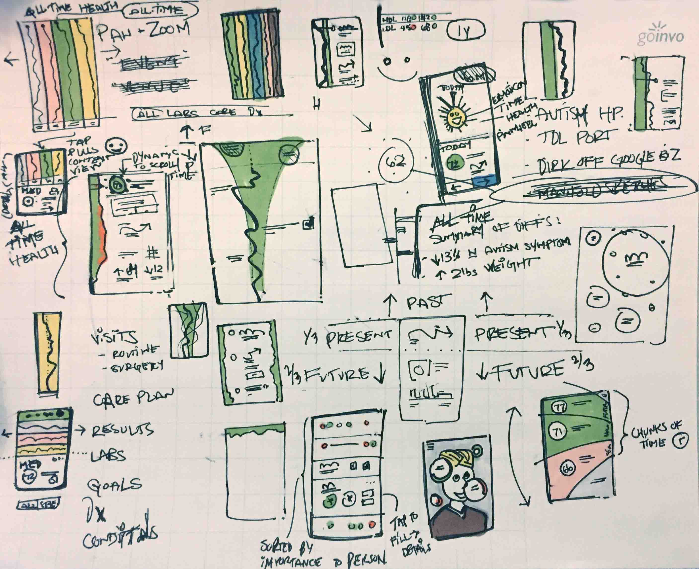
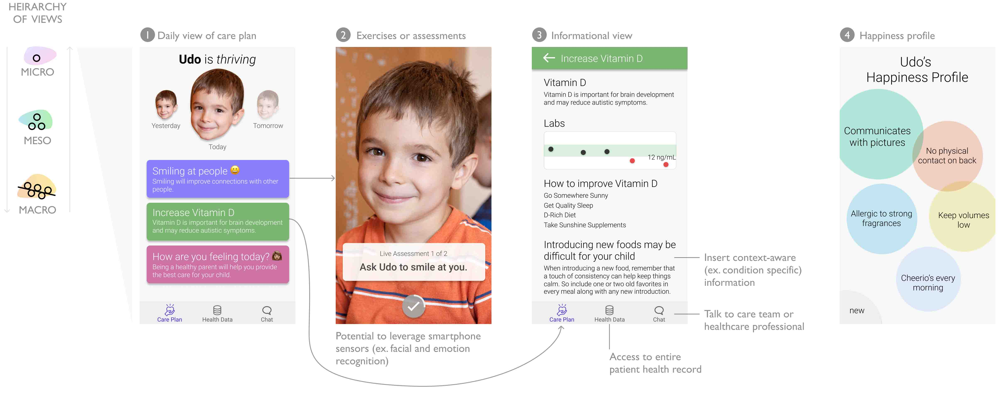
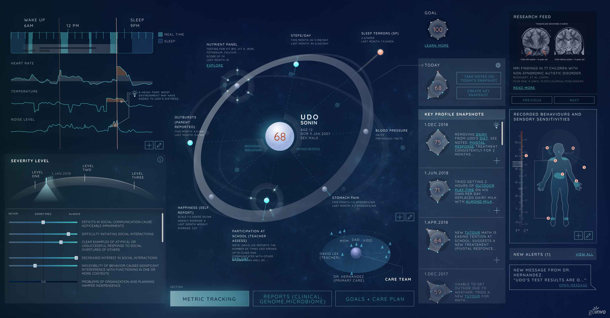

Designs
  UX Needs
Human & Personal
Data Rich Insights
Practical
Understanding your kiddo
What brings them joy? What are they really good at? What brings them comfort? What kind of consistency is important to them? Why do you think this makes them happy?
What upsets them? Why is this? What can we do to resolve this when it happens?
Care Plan & Health Record
Care Plan section
- Top 3 goals
- List and progress tracking of action items we're working on
- Medications and supplements (+ view history)
- Who's on the current care team? (+ view history)
- Create new goal
Health Data
- height, bmi, vit D, sleep, Autism specific common assessments, etc
- omics: genomics, microbiome, phenome, clinome (EHR), expososome, proteome, pharmacome (prescriptions, medications, supplements), physiome (activity + vitals)
- Ability to connect your own helath tracking happens
- Comparison to other kids of this age
- Comparison to other kids of this age and spectrum
- Lab Results (current and historical)
- Health events across time
- Add new data sources
Message center with providers / care team
- Write new message
- View old messages
- Data / information sharing / careguide for providers, therapists, teachers
- Schedule and review visits
Day to Day care & tracking
View what's on the calendar
- What's the list for today? Week? Month?
- Add new events to the calendar
- Visits scheduled + ability to manage
Event
- Notification when it's time for the appointment, medication, or action item
- Options = Start, Give me 10 minutes, Not going to happen
- After clicking Start > Ability to report and then press Done (tracking therapy sessions and activities)
- View progress
Supporting the Caretaker
ASD Community
- Curated feed of blog posts/videos /events from Autism activists, care takers, and people on the spectrum
- Covers the wide variety of wats that ASD presents. "Good" doesn'd just look one way.
New Research
- Curated feed of peer-reviewed, well-respected research related to ASD and child health
- Ability to search research for specific topics
Basics about ASD
- A user-friendly guide to ASD
- An easy place to start
Encouragement
- Reminder that you're doing great
- Strategy for what to do when you get stressed and things seem overwhelming